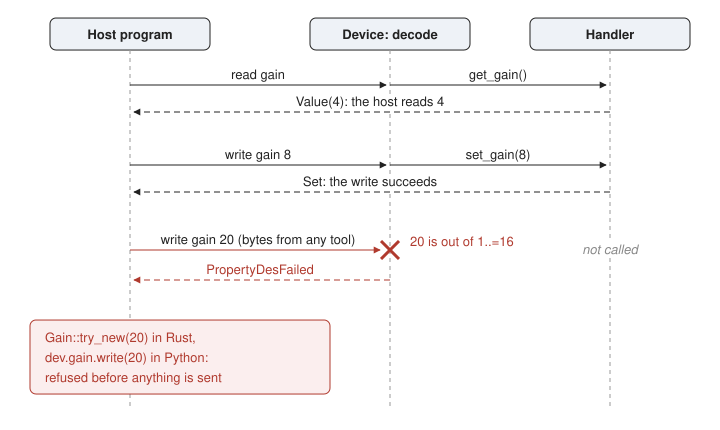

Properties¶
A property is a value of a device that a host reads, writes or both. The thermometer has two at its top level:
mode says what its sampler does, and gain is the amplification of its inputs. This chapter declares both, serves
them on the device, and reads and writes them from Rust, from the command line and from Python. It also shows how a
property's type refuses a bad value before your code ever sees it.
The chapter uses the thermometer example in three crates. thermometer_api holds the API in
examples/thermometer_api/src/lib.rs, thermometer_device the device code in
examples/thermometer_device/src/lib.rs, and thermometer the host programs and a device simulated on your PC. Start the simulated device in a terminal of its
own, and leave it running while you read:
It prints thermometer at ws://127.0.0.1:8080/ww, the address the host programs below connect to.
Declaring a property¶
A property is one line of an API trait: property!(ACCESS name: Type). The access says what a host may do with
the value. Here is the thermometer's root trait, Thermo, with mode and gain in the middle:
/// The thermometer.
#[ww_api_root]
#[effect(edit)]
pub trait Thermo {
/// Sets how often the device samples while `mode` is `Continuous`. `Busy` while a triggered sample runs.
fn set_rate(rate: Fixed<Hertz, One, u16, Range<1, 1000>>) -> Result<(), RateError>;
/// Takes one sample on the first input now, whatever the mode.
fn read_once() -> Sample;
/// What the sampler does.
property!(rw mode: Mode);
/// Amplifier gain. Observable: the device lowers it by itself when the input overloads.
property!(rw+observe gain: Fixed<Ratio, One, u8, Range<1, 16>>);
/// Samples while `mode` is `Continuous`, one per `Command::Trigger` while `Triggered`.
stream!(samples: Sample);
/// Commands for the sampler, in order.
sink!(commands: Command);
/// The inputs, 0-based on the wire. The device says how many it has.
ww_impl!(channel[]: Channel);
/// The status LED.
ww_impl!(indication: Indication);
}
The access is one of three keywords. rw lets a host read and write the value, ro lets it only read, and wo lets
it only write. Both of the thermometer's properties are rw. The +observe after gain's access lets a host
observe the value instead of reading it again and again, as Watching a value
explains.
| Access | A host can | Typical use |
|---|---|---|
rw |
read and write | a setting: a mode, a gain, a threshold |
ro |
read | a measured state: a button, a supply voltage |
wo |
write | a command with a value: a beep at a frequency |
ro means read only for the host. The device changes such a value whenever it likes, for example when a button is
pressed.
Types that carry their limits¶
A property's type is any type the wire format supports: a number, a bool, a struct or an enum. mode is an enum,
and every variant is a state the sampler can be in:
/// What the sampler does.
#[derive_shrink_wrap(borrowed, owned(feature = "std"), derive(Debug, PartialEq, Eq, Clone, Copy), ww_repr = u4)]
pub enum Mode {
/// Takes no samples on its own.
Idle,
/// Samples at the rate `set_rate` set.
Continuous,
/// One sample per `Command::Trigger`.
Triggered,
}
gain is a number from 1 to 16. Its type says so, and the API crate names that type Gain:
Fixed<Ratio, One, u8, Range<1, 16>> is a u8 on the wire, one byte, with its meaning in the type. Ratio and One
say that the number has no unit and counts in steps of one. Range<1, 16> gives its bounds: the smallest and
the largest value the device accepts, both included, as Numbers that know their unit explains for the
thermometer's rate.
Bounds are checked every time a value is built or decoded. A value outside them can't be made in Rust, and the device refuses one that arrives from the wire before your code runs. The figure below shows both.
Serving a property¶
The device answers reads and writes through handlers, one function per read and one per write. Their names follow
the property: get_mode and set_mode for mode. This way of serving a property is the get_set property model,
and the thermometer picks it for every property in its ww_codegen! call:
mod api_impl {
wire_weaver::ww_codegen!(
thermometer_api :: Thermo for super::Thermometer,
server = true, no_alloc = true, use_async = true,
method_model = "_=immediate",
property_model = "_=get_set",
introspect = "with_docs",
);
}
The handlers of mode keep the value in the device's state and start or stop the sampler with it:
async fn set_mode(
&mut self,
_cx: &mut Context<'_, impl EventOut>,
value: Mode,
) -> SetResult<CommonError<'_>> {
self.next_sample = match value {
Mode::Continuous => Some(self.next_sample.unwrap_or(self.now)),
Mode::Idle | Mode::Triggered | Mode::Unknown(_) => None,
};
self.mode = value;
SetResult::Set
}
async fn get_mode(
&mut self,
_cx: &mut Context<'_, impl EventOut>,
) -> GetResult<Mode, CommonError<'_>> {
GetResult::Value(self.mode)
}
A read handler returns a GetResult. GetResult::Value(v) answers the read with v, and GetResult::GetError(e)
answers it with an error. A write handler gets the new value and returns a SetResult: SetResult::Set confirms
the write, and SetResult::SetError(e) refuses it. The Mode::Unknown(_) arm is a variant that a newer host knows
and this firmware doesn't; the sampler then stops.
The handlers of gain are shorter. They never check the value, because its type already did:
async fn set_gain(
&mut self,
_cx: &mut Context<'_, impl EventOut>,
value: Fixed<Ratio, One, u8, Range<1, 16>>,
) -> SetResult<CommonError<'_>> {
// observers get the new gain: the generated code marks it changed after `Set`
self.gain = value;
SetResult::Set
}
async fn get_gain(
&mut self,
_cx: &mut Context<'_, impl EventOut>,
) -> GetResult<Fixed<Ratio, One, u8, Range<1, 16>>, CommonError<'_>> {
GetResult::Value(self.gain)
}
The handler doesn't tell observers about the new gain. The generated code does that after SetResult::Set.
A read, a write and a refused write¶
The figure follows three requests for gain from a host program to the device. The device first decodes each
request, then calls the handler with the value.

- A read reaches
get_gain, which answers 4. - A write of 8 is decoded, reaches
set_gain, and succeeds. - A write of 20 fails while the device decodes it, because 20 is outside
Range<1, 16>. The device answers with the errorPropertyDesFailed, andset_gainis never called.
Step 3 only happens when the bytes come from a program that doesn't know the bounds, such as a tool written for
another firmware. The clients WireWeaver generates know them, so they refuse 20 before anything is sent. The test
the_device_refuses_a_gain_out_of_bounds in examples/thermometer/tests/it/book.rs:gain_bounds writes the bytes
of 20 by hand to check step 3.
Reading and writing from Rust¶
The host program in examples/thermometer/examples/read.rs holds a generated client of the API. For every
property it has read_NAME() and, when the access allows, write_NAME(value). Each call is prepared first and then
sent, here with .await:
let mode = device.read_mode().read().await?;
println!("mode: {mode:?}");
device.write_gain(Gain::bounded(8)).write().await?;
println!("gain: {}", device.read_gain().read().await?.get());
// 20 is no Gain: the type refuses it, so a bad value never reaches the wire
if let Err(e) = Gain::try_new(20) {
println!("refused: {e}");
}
Gain::bounded(8) is for a value written in the source. In const code a value outside 1 to 16 fails the build,
and elsewhere it panics. Gain::try_new(20) is for a value that arrives at run time, from a user or a file: it
returns an error instead, so a bad gain never reaches the wire. Run the program in a second terminal, while the
simulated device runs in the first:
After one sample it prints the lines of this section: mode: Idle, gain: 8 and
refused: 20 is out of 1..=16 (Ratio, u8).
From the command line¶
The ww command line tool reads a device's API from the device itself, through introspection. --websocket
connects it to the simulated thermometer instead of a USB device, and introspect -d prints the API without its
doc comments:
$ ww --websocket ws://127.0.0.1:8080/ww introspect -d
trait Thermo thermometer_api@1.0.0
├─ 0 #[effect(edit)] fn set_rate(rate: Fixed<Hertz, One, u16, Range<1, 1000>> [Hz, 1..=1000]) -> Result<(), RateError>
├─ 1 #[effect(edit)] fn read_once() -> Sample
├─ 2 #[effect(edit)] rw property mode: Mode
├─ 3 #[effect(edit)] rw property gain: Fixed<Ratio, One, u8, Range<1, 16>> [1..=16] observable
├─ 4 stream samples: Sample
├─ 5 #[effect(edit)] sink commands: Command
├─ 6 impl channel[]: thermometer_api::Channel
│ ├─ 0 #[effect(edit)] rw property enabled: bool
│ └─ 1 #[effect(edit)] fn last() -> Sample
└─ 7 impl indication: thermometer_api::Indication
└─ 0 #[effect(edit)] rw property mode: IndicationMode
11 resources, 2 traits, 29 types, 21824 bytes full, 1111 bytes sent
crates: thermometer_api@1.0.0, exact_units@0.1.0
api hash: a8c3c36fc8b3c7d0
Each line is one item of the trait, numbered in declaration order. mode is item 2 and gain item 3. [1..=16]
after gain's type is its bounds. observable marks its +observe.
From Python¶
The wire_weaver Python module talks to any device without generated code. It builds the API at run time from the
device's introspection data, so every property is an attribute of the connected device:
dev.mode.read() reads a property and dev.mode.write(value) writes it. An enum variant without fields is its name
as a string:
print("mode:", dev.mode.read())
dev.mode.write("Continuous")
print("mode:", dev.mode.read())
dev.mode.write("Idle")
Python checks bounds as the Rust client does. Writing 20 raises a ValueError before anything is sent:
print("gain:", dev.gain.read())
dev.gain.write(8)
print("gain:", dev.gain.read())
try:
dev.gain.write(20)
except ValueError as e:
print("refused:", e)
print("gain:", dev.gain.read())
The whole script is examples/thermometer_py/properties.py. With the simulated device running, it prints:
$ python properties.py
mode: Idle
mode: Continuous
gain: 4
gain: 8
refused: 20 is out of exact_units::Fixed<Ratio, One, u8, Range<1, 16>> (1..=16)
gain: 8
The gain stays at 8 after the refused write: the device never saw 20.
Where to go next¶
- Watching a value sends a property's new values to the host as they change, as
gainallows with+observe. - Properties in depth covers the rest: a property served as a plain field, errors of a
property's own,
constitems, and the host's timeouts and promises.
//! API of the thermometer example device: a sensor board with up to four temperature inputs. It reads a
//! temperature once, samples continuously at a rate the host sets, streams the readings with their sequence
//! numbers, takes commands, and reports an amplifier gain that the device may change by itself.
//!
//! Every number carries its unit, step and bounds in its type: the rate is `Fixed<Hertz, One, u16, Range<1, 1000>>`,
//! a temperature `Point<Celsius, Fixed<Kelvin, Centi, i16>>`. On the wire each is exactly its integer.
//!
//! This is the first release, wire line 1 at w1.0. It is the same wire as line 1 of `tests/thermo_api`, the
//! multi-line bench that tells this device's later life.
#![cfg_attr(not(feature = "std"), no_std)]
use ww_api::prelude::*;
use ww_si::origins::Celsius;
use ww_si::prefix::{Centi, One};
use ww_si::units::{Hertz, Item, Kelvin, Ratio, Sample as SampleUnit};
use ww_si::{Fixed, IndexFrom1, Point, Range, Seq};
//! The thermometer example device ([thermometer_api]): the server, its handlers and its event loop, written once.
//!
//! The same code runs in three places. A simulated device on a PC serves it over WebSocket or UDP with
//! [SimBoard]; the firmware of each board serves it over USB with the board's own [Board]; tests serve it in
//! process. What differs between them is only the [Board] and the transport given to [serve].
//!
//! ```text
//! thermometer_api (the trait and types)
//! |
//! thermometer_device (this crate: Thermometer, serve)
//! / | \
//! SimBoard over WS Nucleo G0B1RE Pico 2
//! (examples/thermometer) (examples_mcu/...)
//! ```
#![cfg_attr(not(feature = "std"), no_std)]
#[ww_trait] or #[ww_api_root] that describes what a device offers: methods, properties, streams, sinks and nested traits.pub type Gain = Fixed<Ratio, One, u8, Range<1, 16>>;
Amplifier gain: 1 to 16, no unit.
Range<1, 16>; checked whenever a value is built or decoded.ww_codegen! options.ww_codegen!: get_set calls a read and a write handler, value_on_changed keeps a plain field.pub enum GetResult<T, E> {
Value(T),
GetError(E),
Unimplemented,
/// A host server's own answer ([Failure]).
Failed(Failure),
}
pub enum SetResult<E> {
Set,
SetError(E),
Unimplemented,
/// A host server's own answer ([Failure]).
Failed(Failure),
}
/// A value outside a property's bounds never reaches its handler: the device refuses the bytes when it decodes them.
/// The typed client can't even build one (`Gain::try_new(20)` fails), so the test writes the bytes itself.
#[tokio::test(start_paused = true)]
async fn the_device_refuses_a_gain_out_of_bounds() {
assert!(Gain::try_new(20).is_err());
with_dyn_device("thermometer/gain_bounds", |dev| async move {
let root = dev
.device_introspect()
.expect("introspection data")
.api_bundle;
let gain = wire_weaver_client::DynResource::root(root)
.child("gain")
.expect("gain");
let path = gain.index_chain().to_vec();
let write = |byte: u8| {
dev.cmd()
//! Reads the thermometer: one sample, then its mode and gain. The stream, the observed gain and the channels have
//! programs of their own: `thermometer_stream`, `thermometer_observe` and `thermometer_channels`.
//!
//! `cargo run -p thermometer --example thermometer_read` against `thermometer_sim` on this PC, or
//! `-- --url ws://ADDRESS:8080/ww` against another.
use anyhow::Result;
use clap::Parser;
use thermometer::Thermometer;
use thermometer_api::Gain;
#[derive(Parser)]
struct Args {
#[arg(long, default_value = "ws://127.0.0.1:8080/ww")]
url: String,
}
"""Reads and writes the thermometer's properties: the sampler's mode and the amplifier's gain.
Run the simulated device first (`cargo run -p thermometer --example thermometer_sim`), then
`python properties.py`, or `python properties.py ws://ADDRESS:PORT/ww` for another address.
"""
import sys
import wire_weaver as ww
def main(url):
# --8<-- [start:connect]
dev = ww.connect(websocket_url=url)
# --8<-- [end:connect]